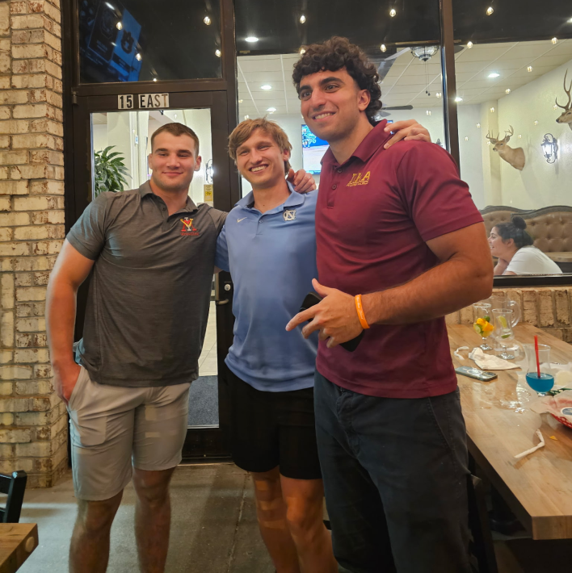
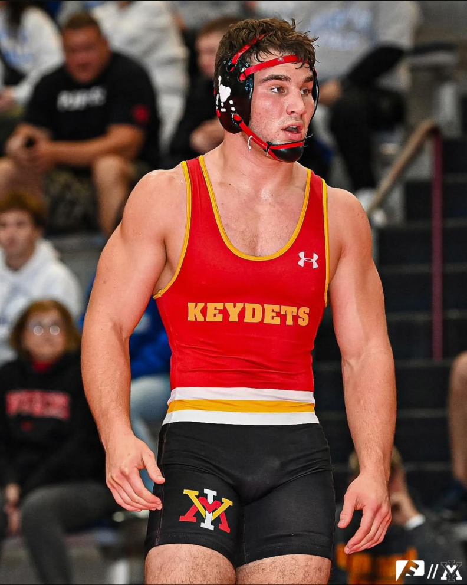
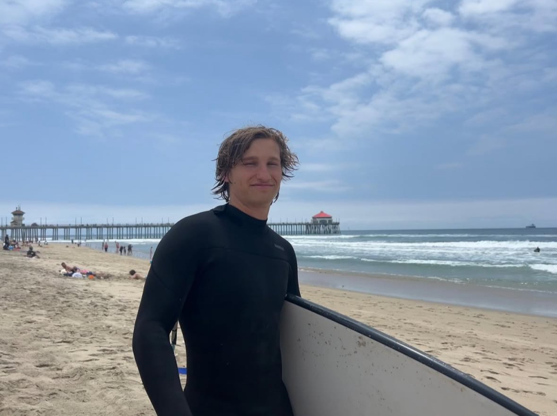
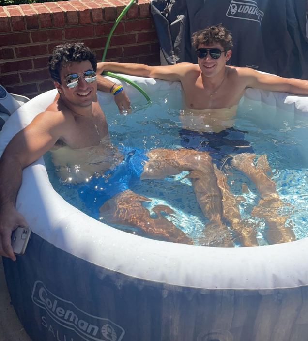

ABOUT
We’re not just another car detailing service—we’re a team of hardworking college students from Suffolk, VA, who know the value of determination. We take pride in delivering top-tier results, restoring your vehicle to its factory-fresh condition with precision and care. At Gnarly Bros, we bring the shine to your doorstep or wherever you need us—whether that’s your home, job site, or any other location. Our mobile detailing services ensure ultimate convenience without sacrificing quality. No need to take time out of your busy day or travel to a shop—we come to you, fully equipped and ready to deliver exceptional results wherever you are. More than just a clean car, we offer a customer-first experience that blends quality workmanship with outstanding service. From meticulous hand washes to deep interior cleaning, we go above and beyond to make sure your vehicle gets the attention it deserves—every single time. Trust Gnarly Bros to provide an unbeatable level of care and convenience. We’re committed to transforming your ride and making your detailing experience as easy and satisfying as possible. Let us bring out the best in your car, no matter where you are.


Meet Braxton, a mobile detailing business owner who's not only dedicated to keeping cars spotless but also a star player on the Virginia Military Institute wrestling team. As a civil engineering major, Braxton balances the rigors of his coursework with the demands of wrestling and running his detailing company. His extensive background in detailing, built through years of meticulous work and hands-on experience, has made him a trusted name in the local community. Whether he's grappling on the mat or fine-tuning a vehicle to perfection, Braxton brings the same level of discipline and determination to everything he does.
Jason is a dedicated student at Christopher Newport University, juggling the challenges of being an electrical engineering major with his active involvement in club soccer and tennis. In addition to his academic and athletic commitments, he also runs his own mobile detailing business, showcasing his entrepreneurial spirit and attention to detail. Jason’s knack for problem-solving and his love for teamwork shine through in everything he does—whether it’s fine-tuning circuits, strategizing on the field, or perfecting a car’s finish. His commitment to excellence in all aspects of life makes him a true standout among his peers.


Kyrillos is a driven computer science major at Christopher Newport University, where he's an active member of the Pi Kappa Alpha fraternity. Alongside his academic and fraternity commitments, he runs a mobile detailing business, blending his entrepreneurial mindset with his passion for technology and precision. Kyrillos also created this very website, showcasing his skills and innovative thinking. Balancing the demands of school, fraternity life, and his detailing company, Kyrillos thrives in every aspect of his college experience. His ability to merge technical expertise with a collaborative mindset makes him a standout among his peers, and he’s always ready to tackle the next challenge head-on.